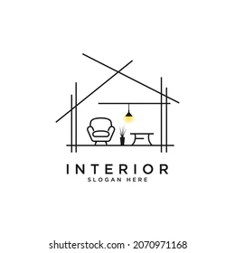

Cocinas
Cuando Hablamos de cocinas tener distintos tipos hoy te mostrare 2 de ellos:
Cocinas Rústicas:
Las cocinas rústicas tienen características muy marcadas y personales, quizás la más
representativa es su aspecto rural, ya que su material predominante es la madera y
sus tonalidades los marrones, colores que trasmiten calidez y naturalidad a
cualquier estancia.
Cocinas Integrales Modernas:
La definición de una cocina integral supone la integración en un mismo espacio las
diferentes partes de las que se compone nuestra cocina: muebles, encimera,
electrodomésticos empotrados etc. Su función principal es ser adaptable a cualquier
espacio, sin perder en estilo y funcionalidad.